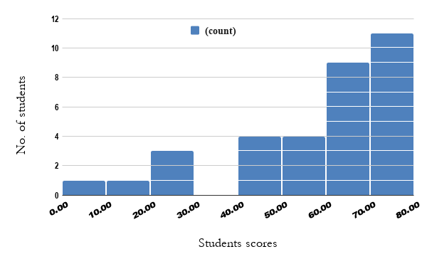

22494 Convex Optimization: Final Exam
|
 |
The final exam will be a 24 hour take-home exam on Monday July 20. We will only be using remote release and turning in of the exams. Also please be sure to leave time for turning in your exam online — we will not be very forgiving of late turn-in times.
Final exam statistics (2020):
25th percentile: 47
Median: 63
75th percentile: 70
Mean: 55.42
|
Previous final exams for practice
The necessary data files can be found
here.
|